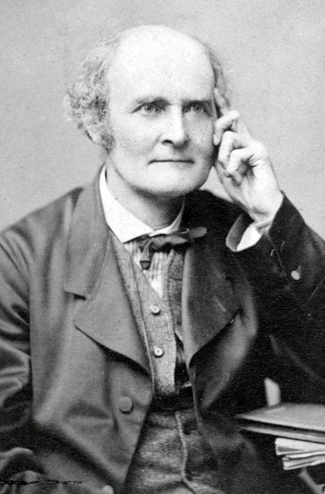

這份筆記是關於不變子空間與凱利-漢米爾頓定理。
不變子空間
定義 1：不變子空間 (Invariant Subspace)
給定線性映射\(T:V\to V\)與\(V\)的子空間\(W\)。我們稱\(W\)為\(V\)的\(T\)-不變子空間，若\(T(W)\subseteq W\) i.e. \(\forall w\in W\), \(T(w)\in W\)。
定義 2：循環子空間 (Cyclic Subspace)
給定線性映射\(T:V\to V\)與\(0\neq x\in V\)。我們稱 \[ W=\mbox{span}\{x,T(x),T^2(x),\cdots\} \] 為由\(x\)生成的\(V\)的\(T\)-循環子空間。
註記 2-1
沿用定義2的符號，則\(W\)是\(T\)-不變子空間。
證明：對於所有\(v\in W\)，有 \[ v=a_1T^{n_1}(x)+a_2T^{n_2}(x)+\cdots+a_kT^{n_k}(x) \] 故 \[ T(v)=a_1T^{n_1+1}(x)+a_2T^{n_2+1}(x)+\cdots+a_kT^{n_k+1}(x) \] 顯然仍有\(T(v)\in W\)，故\(W\)是\(T\)-不變的。QED
註記 2-2
沿用定義2的符號，則\(W\)是包含\(x\)的\(V\)的\(T\)-不變子空間中最小的。
證明：令\(\tilde{W}\subseteq V\)為一個\(T\)-不變子空間，且\(x\in\tilde{W}\)。我們希望說明\(W\subseteq\tilde{W}\)。
我們有\(x\in\tilde{W}\)，則由\(\tilde{W}\)是\(T\)-不變的知 \[
T(x)\in T(\tilde{W})\subseteq\tilde{W}
\] 故 \[
\forall n\in\mathbb{N}, T^n(x)\in\tilde{W}
\] 即\(W\subseteq\tilde{W}\)。QED
定義 3：限制 (Restriction)
給定線性映射\(T:V\to V\)與\(T\)-不變子空間\(W\)。我們將\(T\)在\(W\)上的限制\(T_W:W\to W\)定義為 \[ T_W(v)=T(v),\forall v\in W \]
定理 4
給定線性映射\(T:V\to V\)，其中\(\dim V<\infty\)，並令\(W\subseteq V\)是一個\(T\)-不變子空間，則\(T_W:W\to W\)的特徵多項式整除\(T:V\to V\)的特徵多項式。
證明：令\(\gamma=\{v_1,\cdots,v_k\}\)為\(W\)的有序基底，則我們把它擴張成\(V\)的有序基底 \[ \beta=\{v_1,\cdots,v_k,v_{k+1},\cdots,v_n\} \] 令\(A=[T]^\beta_\beta\), \(B_1=[T_W]^\gamma_\gamma\)，則 \[ A=\left( \begin{array}{c|c} B_1 & B_2\\ \hline O & B_3 \end{array} \right) \] 其中左下角的\(O\)是零矩陣(因為\(W\)是\(T\)-不變的)。故 \[ \begin{aligned} T\mbox{的特徵多項式}&=\det\left( \begin{array}{c|c} B_1-tI_k & B_2\\ \hline O & B_3-tI_{n-k} \end{array} \right)\\ &=\det(B_1-tI_k)\det(B_3-tI_{n-k}) \end{aligned} \] 而其中\(\det(B_1-tI_k)\)是\(T_W\)的特徵多項式。QED
定理 5
給定線性映射\(T:V\to V\)，其中\(\dim V<\infty\)，且\(W\)為由\(0\neq
v\in V\)生成的\(V\)的\(T\)-循環子空間，其中\(\dim W=k\)，則
1. \(\{v,T(v),\cdots,T^{k-1}(v)\}\)是\(W\)的一個基底。
2. 若 \[
a_0v+a_1T(v)+\cdots+a_{k-1}T^{k-1}(v)+T^k(v)=0
\] 則\(T_W\)的特徵多項式為 \[
(-1)^k(a_0+a_1t+\cdots+a_{k-1}t^{k-1}+t^k)
\]
證明：
1. 對於\(v\neq 0\)，令\(j\)是使 \[
\beta=\{v,T(v),\cdots,T^{j-1}(v)\}
\] 線性獨立的最大整數(因為\(\dim
V<\infty\)，故知\(j\)一定存在)。令\(Z=\mbox{span}(\beta)\)，則\(\beta\)是\(Z\)的基底，且由\(\beta\)的定義知 \[
T^j(v)\in\mbox{span}(\beta)
\] 給定\(w\in Z\)，則 \[
\begin{aligned}
w&=b_0v+b_1T(v)+\cdots+b_{j-1}T^{j-1}(v)\\
T(w)&=\underbrace{b_0T(v)+b_1T^2(v)+\cdots}_{\in\mbox{span}(\beta)}+\underbrace{b_{j-1}T^j(v)}_{\in\mbox{span}(\beta)}\in\mbox{span}(\beta)=Z
\end{aligned}
\] 故知\(Z\)是\(T\)-不變的。由註記2-2，我們知道\(W\subseteq Z\)。又顯然\(Z\subseteq W\)，故\(Z=W\), \(j=k\)。
2. 令 \[
\beta=\{v,T(v),\cdots,T^{k-1}(v)\}
\] 是第1.點中給定的\(W\)的基底，則\(\dim W=k\), \(\mbox{span}(\beta)=W\)，則 \[
[T_W]_\beta^\beta=\left(
\begin{array}{cccccc}
0 & 0 & 0 & \cdots & 0 & -a_0\\
1 & 0 & 0 & \cdots & 0 & -a_1\\
0 & 1 & 0 & \cdots & 0 & -a_2\\
\vdots & \vdots & \vdots & \ddots & \vdots &
\vdots\\
0 & 0 & 0 & \cdots & 1 & -a_{k-1}
\end{array}
\right)
\] 使用行列式的置換定義(這裡的定理18)可以計算得
\[
\det\left([T_W]^\beta_\beta-tI\right)=(-1)^k(t^k+a_{k-1}t^{k-1}+\cdots+a_1t+a_0)
\] QED
註記 6
給定線性映射\(T:V\to V\)，其中\(\dim V<\infty\)，並令\(v_1,v_2,\cdots,v_k\)為\(T\)彼此不同的特徵向量，且它們彼此對應的特徵值都不同。令\(W\subseteq V\)為一\(T\)-不變子空間，則若 \[
v_1+v_2+\cdots+v_k\in W
\] 則\(v_i\in W\), \(\forall i\)。
證明：我們對\(k\)做數學歸納法。當\(k=1\)時，結論是顯然的。而假設此推論對\(1\sim k-1\)都成立，則給定 \[ v_1+v_2+\cdots+v_k\in W \] 由\(W\)是\(T\)-不變知 \[ T(v_1+v_2+\cdots+v_k)=\lambda_1v_1+\lambda_2v_2+\cdots+\lambda_kv_k\in W \] 其中\(\lambda_1,\cdots,\lambda_k\)為\(v_1,\cdots,v_k\)分別對應的特徵值。又 \[ \lambda_k(v_1+v_2+\cdots+v_k)\in W \] 故 \[ (\lambda_1-\lambda_k)v_1+(\lambda_2-\lambda_k)v_2+\cdots+(\lambda_{k-1}-\lambda_k)v_{k-1}\in W \] 而這是\(k-1\)時的狀況，由歸納假設有\((\lambda_i-\lambda_k)v_i\in W\), \(\forall i=1\sim k-1\)，即\(v_i\in W\), \(\forall i=1\sim k-1\)。又由\(v_1+\cdots+v_k\in W\)，有\(v_k\in W\)。故由數學歸納法，我們知道此推論對任何\(k\)都成立。QED
註記 7
給定線性映射\(T:V\to V\)，其中\(\dim V<\infty\)，並令\(T\)是可對角化的，且令\(W\subseteq V\)是\(T\)-不變子空間，則\(T_W\)也是可對角化的。
證明：由這裡的定理15知\(T\)可對角化若且唯若 \[
V=E_{\lambda_1}\oplus E_{\lambda_2}\oplus\cdots\oplus E_{\lambda_k}
\] 令\(W_{\lambda_i}=W\cap
E_{\lambda_i}\)是\(V\)的子空間，並令\(\beta_{\lambda_i}\)是\(W_{\lambda_i}\)的基底，其中\(i=1\sim k\)。令 \[
\beta=\bigcup_{\lambda_i}\beta_{\lambda_i}
\] 則由這裡的定理12知\(\beta\)是線性獨立的。我們希望說明\(\beta\)生成\(W\)。(如果是的話\([T_W]^\beta_\beta\)就是對角矩陣了。)
給定\(v\in W\subseteq
V\)，我們知道\(v\)可以被唯一表為\(v=v_1+\cdots+v_k\)，其中\(v_i\in E_{\lambda_i}\)(見這裡的引理11)，則由註記6我們知道\(v_i\in W\), \(\forall i=1\sim k\)。故 \[
v_i\in W\cap E_{\lambda_i}=W_{\lambda_i}\Rightarrow
v_i\in\mbox{span}(\beta_{\lambda_i})
\] 故 \[
v=v_1+\cdots+v_k\in\mbox{span}(\beta)
\] 即\(\beta\)生成\(W\)。QED
註記 8
給定線性映射\(T:V\to V\)，其中\(\dim V=n<\infty\)，並令\(T\)總共有\(n\)個相異的特徵值，則\(V\)是自己的\(T\)-循環子空間 i.e. 存在\(v\in V\)使得 \[ V=\mbox{span}\{v,T(v),T^2(v),\cdots\} \]
證明 1：給定\(0\neq v_i\in E_{\lambda_i}\)，令 \[
v=v_1+v_2+\cdots+v_n
\] 令\(W=\{v,T(v),T^2(v),\cdots\}\)是由\(v\)生成的\(T\)-循環子空間，則由註記6我們知道由於\(v\in W\)，故對於所有\(i\)有\(v_i\in
W\)。故 \[
V=\mbox{span}\{v_1,v_2,\cdots,v_n\}\subseteq W
\] 然而\(W\subseteq V\)，故\(W=V\)，即\(V\)自己是\(T\)-循環的。QED
證明 2：一樣給定\(0\neq v_i\in E_{\lambda_i}\)，令 \[ v=v_1+v_2+\cdots+v_n \] 由這裡的定理5知\(\{v_1,v_2,\cdots,v_n\}\)是線性獨立的。故 \[ \beta=\{v_1,v_2,\cdots,v_n\} \] 會是\(V\)的基底。令 \[ \gamma=\{v,T(v),T^2(v),\cdots,T^{n-1}(v)\} \] 而 \[ \begin{aligned} v&=v_1+v_2+\cdots+v_n\\ T(v)&=\lambda_1v_1+\lambda_2v_2+\cdots+\lambda_nv_n\\ T^2(v)&=\lambda_1^2v_1+\lambda_2^2v_2+\cdots+\lambda_n^2v_n\\ &\vdots \end{aligned} \] 故 \[ \begin{aligned} \det\left([I]^\beta_\gamma\right)&=\det\left( \begin{array}{cccc} 1 & \lambda_1 & \lambda_1^2 & \cdots\\ 1 & \lambda_2 & \lambda_2^2 & \cdots\\ \vdots & \vdots & \vdots & \ddots\\ 1 & \lambda_n & \lambda_n^2 & \cdots \end{array} \right)\\ &=\pm\prod_{1\leq i\leq j\leq n}(\lambda_i-\lambda_j)\neq 0 \end{aligned} \] 故\(\mbox{rank}\left([I]^\beta_\gamma\right)=n\)，即是線性獨立的且有\(n\)個元素，故\(\gamma\)是\(V\)的基底，即\(V\)是\(T\)-循環的。QED
凱利-漢米爾頓定理
定理 9：凱利-漢米爾頓定理 (Cayley-Hamilton Theorem)
給定線性映射\(T:V\to V\)，其中\(\dim V<\infty\)，並令\(f(t)\)為\(T\)的特徵多項式。則\(f(T)=0\)。
證明 1：我們希望說明\(\forall v\in V\), \(f(T)(v)=0\)。若\(v=0\)，則結論是顯然的。若\(v\neq 0\)，則令 \[
W=\mbox{span}\{v, T(v),T^2(v),\cdots\}
\] 為由\(v\)生成的\(V\)的\(T\)-循環子空間。且可以令 \[
\dim W=k\leqslant n=\dim V
\] 由定理5的第1.點知我們可以令\(W\)的基底為 \[
\beta=\{v,T(v),\cdots,T^{k-1}(v)\}
\] 故存在\(a_0,\cdots,a_{k-1}\)使得 \[
a_0v+a_1T(v)+\cdots+a_{k-1}T^{k-1}(v)+T^k(v)=0
\] 令\(g(t)\)為\(T_W\)的特徵多項式，則由定理5的第2.點知
\[
g(t)=(-1)^k(a_0+a_1t+\cdots+a_{k-1}t^{k-1}+t^k)
\] 而又由定理4知存在多項式\(q(t)\)使得 \[
f(t)=g(t)q(t)
\] 故 \[
\begin{aligned}
f(T)(v)&=q(T)g(T)(v)\\
&=q(T)(-1)^k(a_0I+a_1T+\cdots+a_{k-1}T^{k-1}+T^k)(v)\\
&=q(T)(-1)^k(a_0v+a_1T(v)+\cdots+a_{k-1}T^{k-1}(v)+T^k(v))\\
&=q(T)\times 0=0
\end{aligned}
\] 故有\(f(T)=0\)。QED
證明 2：給定\(A\in M_{n\times n}(F)\)，並令 \[ B=(tI_n)\mbox{的古典伴隨矩陣}\in M_{n\times n}(F) \] 由這裡的定理4-1-1，我們有 \[ (tI_n-A)\cdot B=\det(tI_n-A)\cdot I_n=(-1)^nf(t)\cdot I_n \] 其中\(f(t)\)為\(A\)的特徵多項式。且我們可以把\(B\)寫作 \[ B=\sum_{i=0}^{n-1}t^iB_i, B_i\in M_{n\times n}(F) \] 故有 \[ \begin{aligned} (-1)^nf(t)I_n&=(tI_n-A)\left(\sum_{i=1}^{n-1}t^iB_i\right)\\ &=\sum_{i=0}^{n-1}tI_nt^iB_i-\sum_{i=0}^{n-1}At^iB_i\\ &=t^nB_{n-1}+\sum_{i=1}^{n-1}t^i(B_{i-1}-AB_i)-AB_0 \end{aligned} \] 令 \[ (-1)^nf(t)=t^n+c_{n-1}t^{n-1}+\cdots+c_1t+c_0 \] 則 \[ (t^n+c_{n-1}t^{n-1}+\cdots+c_1t+c_0)I_n=t^nB_{n-1}+\sum_{i=1}^{n-1}t^i(B_{i-1}-AB_i)-AB_0 \] 比較係數可得 \[ \left\{ \begin{aligned} B_{n-1}&=I_n\\ B_{i-1}-AB_i&=c_iI_n,\;\;i=1\sim n-1\\ -AB_0&=c_0I_n \end{aligned} \right. \] 故 \[ \begin{aligned} (-1)^nf(A)&=A^n+A^{n-1}c_{n-1}+\cdots+Ac_1+c_0I_n\\ &=A^nB_{n-1}+\sum_{i=1}^n A^i(B_{i-1}-AB_i)-AB_0=0 \end{aligned} \] 即\(f(A)=0\)。QED
